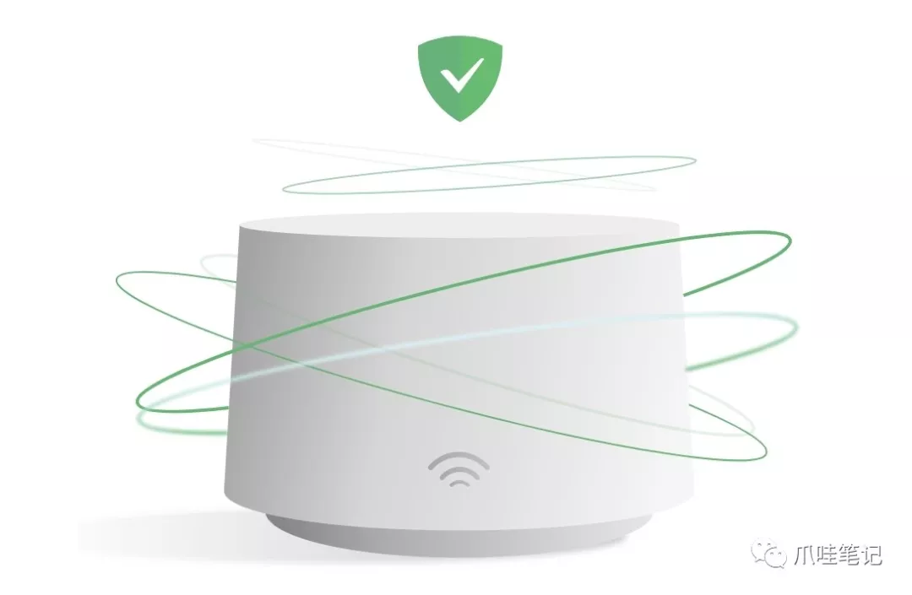
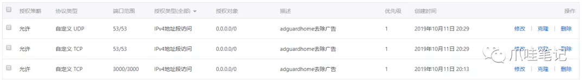
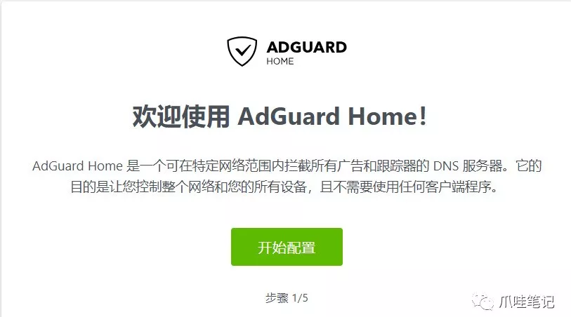
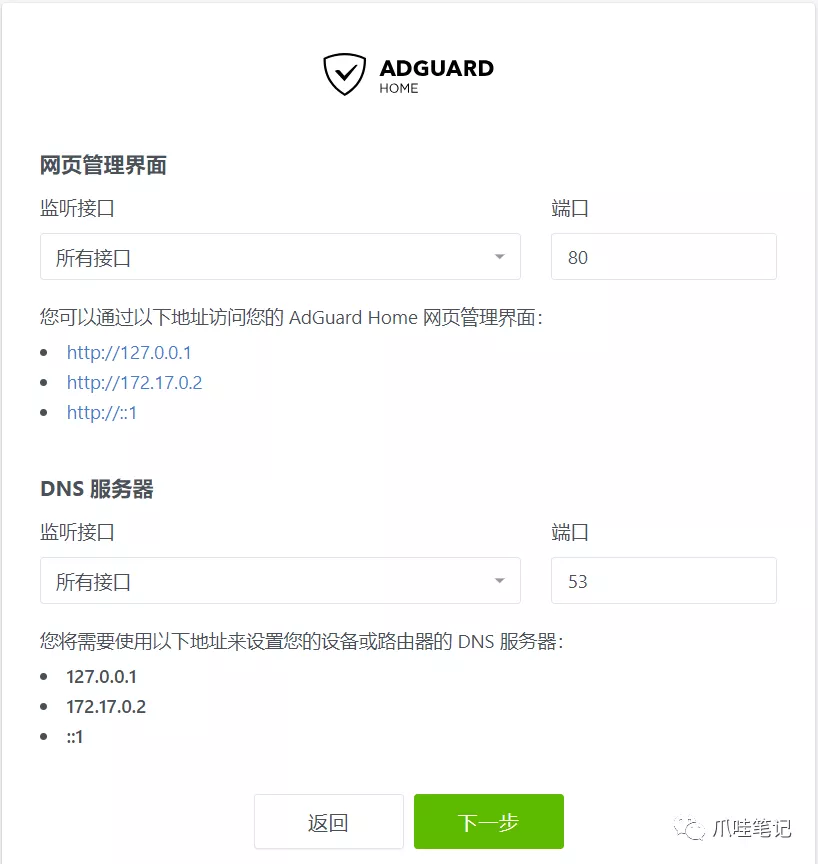
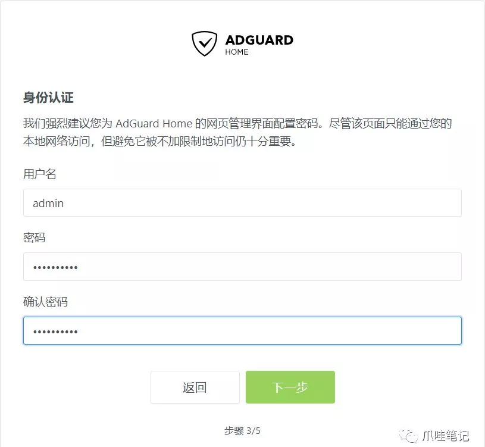
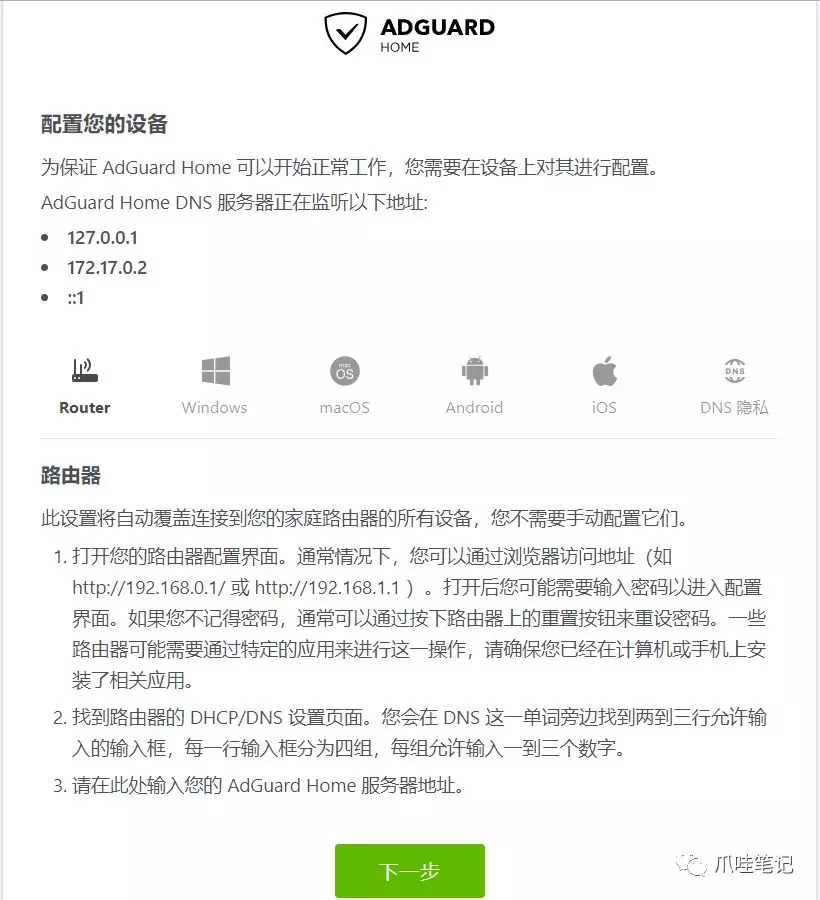
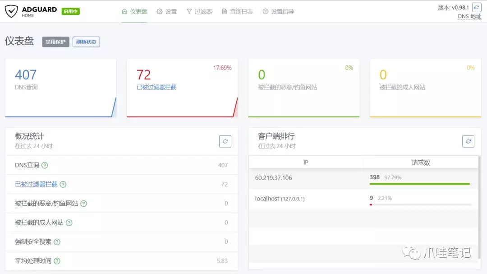
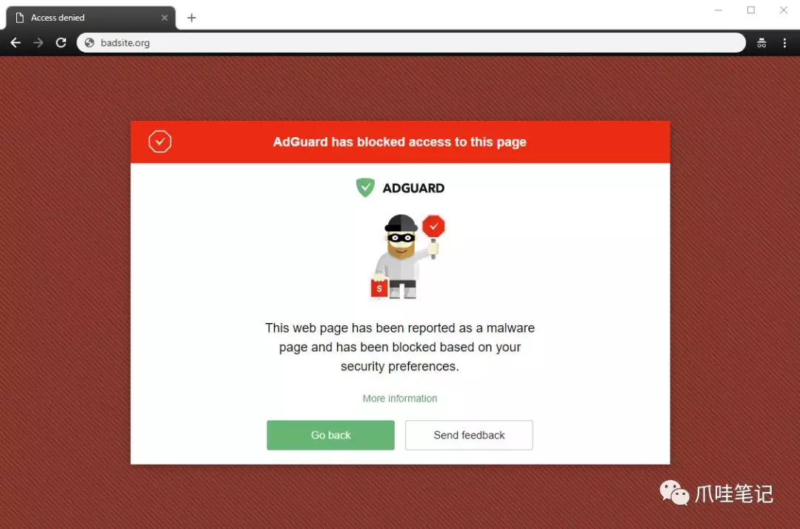
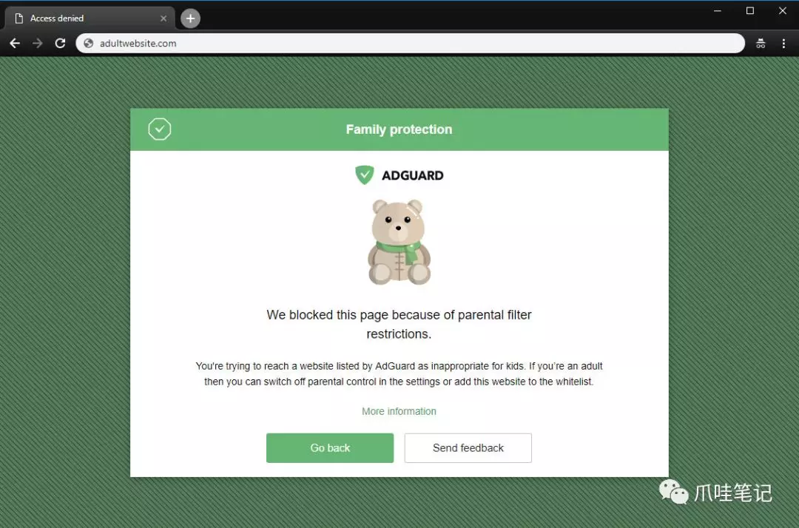
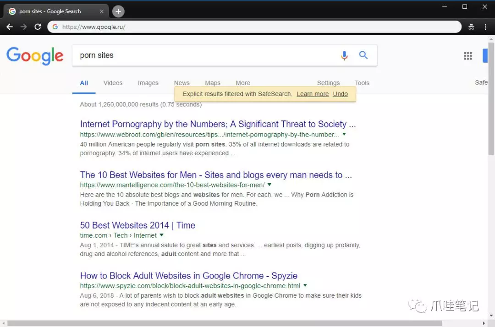

大渣好，我系古天咯，我是渣渣辉，给大渣介笑个敲好玩的游系，汤碗拦月，一过你煤油王过的船心版本，几虚三昏中，给咧带来不一酿的赶脚，开菊一八虾居刀。看一刀，刷一连，装呗不发一昏钱，奶，跟我一器看。
在这广告满天飞的年代，相信大家对这个台词并不陌生！当然还有更恶心的，某大型知名技术社区经常会出现类似广告标语："如何满足她？教你一招解决床上问题，千万要记住！"卧槽，真是毫无底线。
好了，这里就不一一列举了，有时候广告标语都会让你大吃一惊，原来广告商可以这么有才华！那么，下面这款广告拦截神器就来拯救大家了，远离广告，远离诱惑，做新世纪的三好少年！

AdGuard Home 是一款全网广告拦截与反跟踪软件。在您将其安装完毕后，它将保护您所有家用设备，同时您不再需要安装任何客户端软件。随着物联网与连接设备的兴起，掌控您自己的整个网络环境变得越来越重要。
简单点说，AdGuard Home是一个全网络范围的广告和跟踪器阻止DNS服务器。其目的是让您控制整个网络和所有设备，并且不需要使用客户端程序。同时，AdGuard Home具有Web界面，可轻松管理过滤过程。
推荐使用 Docker 一键安装：
docker run --name adguardhome \
-v /my/own/workdir:/opt/adguardhome/work \
-v /my/own/confdir:/opt/adguardhome/conf \
-p 53:53/tcp -p 53:53/udp \
-p 853:853/tcp -p 3000:3000/tcp \
-d adguard/adguardhome安装成功以后，一定要开启 53、3000 端口。

然后访问 http://ip:3000 进行网站配置：
欢迎界面：

配置网页管理界面端口，这里一定要修改为 3000，当然只要跟 Docker 安装时候的映射端口保持一致就可以。

配置账号密码，这个会写入配置文件，前台并没有修改密码的地方，如果要变更，需要修改配置文件并重启服务。

最后一步，配置设备，给出了详细的配置说明。

配置成功以后进入欢迎页。

AdGuard Home默认使用 Cloudflare DNS作为上游服务器，如果您服务器在国内可能请求上游DNS延迟比较高，点击设置 - DNS设置为国内的DNS，如腾讯的 119.29.29.29，阿里巴巴的 223.5.5.5，但是不支持 DNS over TLS。
在后台 - 过滤器，AdGuardHome 内置了部分广告过滤规则，你可以手动添加过滤器或者进行检查更新，也可以自定义过滤器规则，比如在企业内网，我不想员工访问一些特定的网站，比如知乎、微博等等。
#拦截 zhihu.com、weibo.com 域名及其所有子域名
||zhihu.com^
||weibo.com^企业内部如果想做，内网域名映射，这也是一个不错的选择，只需要在过滤器中加入以下规则。
192.168.1.156 blog.52itstyle.vip – AdGuard Home 现在将会把 blog.52itstyle.vip 解析到 192.168.1.156。配置文件位于 /my/own/confdir 目录下 AdGuardHome.yaml，如果你想修改密码只能通过这里修改，部分代码：
bind_host: 0.0.0.0
bind_port: 3000
auth_name: admin
auth_pass: admin
language: zh-cn
rlimit_nofile: 0
dns:
bind_host: 0.0.0.0
port: 53
protection_enabled: true
filtering_enabled: true
blocking_mode: nxdomain
blocked_response_ttl: 10
querylog_enabled: true
ratelimit: 20
ratelimit_whitelist: []
refuse_any: true
bootstrap_dns:
- 119.29.29.29
- 223.5.5.5这里以windows为例，如果你在路由器进行了配置，则忽略这一步：
通过开始菜单或 Windows 搜索功能打开控制面板。
点击进入 ”网络和 Internet“ 后，再次点击进入 “网络和共享中心”
在窗口的左侧找到 ”更改适配器设置“ 并点击进入。
选择您正在连接的网络设备，右击它并选择 ”属性“ 。
在列表中找到 ”Internet 协议版本 4 (TCP/IPv4)“ ，选择并再次点击 ”属性“ 。
选择 ”使用下面的 DNS 服务器地址“ ，并输入您的 AdGuard Home 服务器地址。
使用 AdGuard【浏览安全】网页服务，AdGuard Home 将检查域名是否被浏览安全服务列入黑名单。它将使用隐私性强的检索 API 来执行检查，只有域名的 SHA256 的短前缀会被发送到服务器。

使用 AdGuard 【家长控制】服务，AdGuard Home 将使用与浏览安全服务相同的隐私性强的 API 来检查域名指向的网站是否包含成人内容。

如果您有孩子，并且不想让他们访问内容不当的网站，这将非常有用。
AdGuard Home 将对以下搜索引擎强制启用安全搜索：Google、YouTube、Bing 和 Yandex。

同样，此选项在最受欢迎的搜索引擎中强制实施“安全搜索”模式（启用后，它会忽略成人网站和图片，而不显示在搜索结果中）
总的来说，AdGuard Home 还是很强大的，支持树莓派 Windows、Linux、MacOS等系统，还提供Docker 一键安装方式，简单方便，最重要的是时常进行更新维护。AdGuard Home还提供了直观的数据统计系以及界面化的操作，无论是家庭还是企业，如果你想自建 DNS，AdGuard Home 绝壁是个不错的选择。
最后，想体验一把无广告清爽感觉的小伙伴，可以把 DNS 设置为 118.190.247.102，如果不生效，清除一下浏览器缓存，如果启用了IPV6的，记得把网络属性勾选掉。